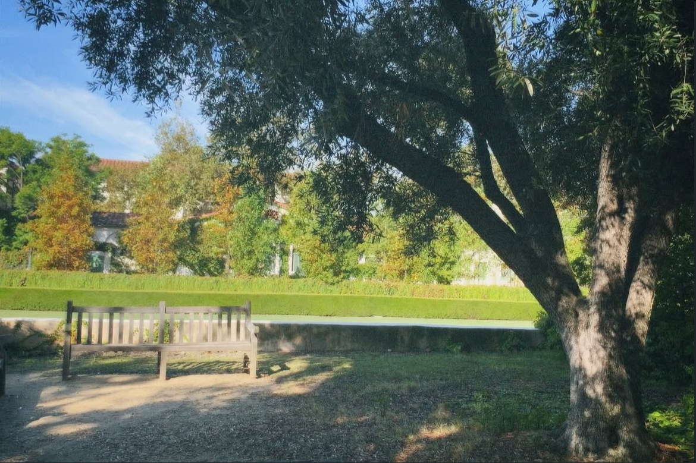
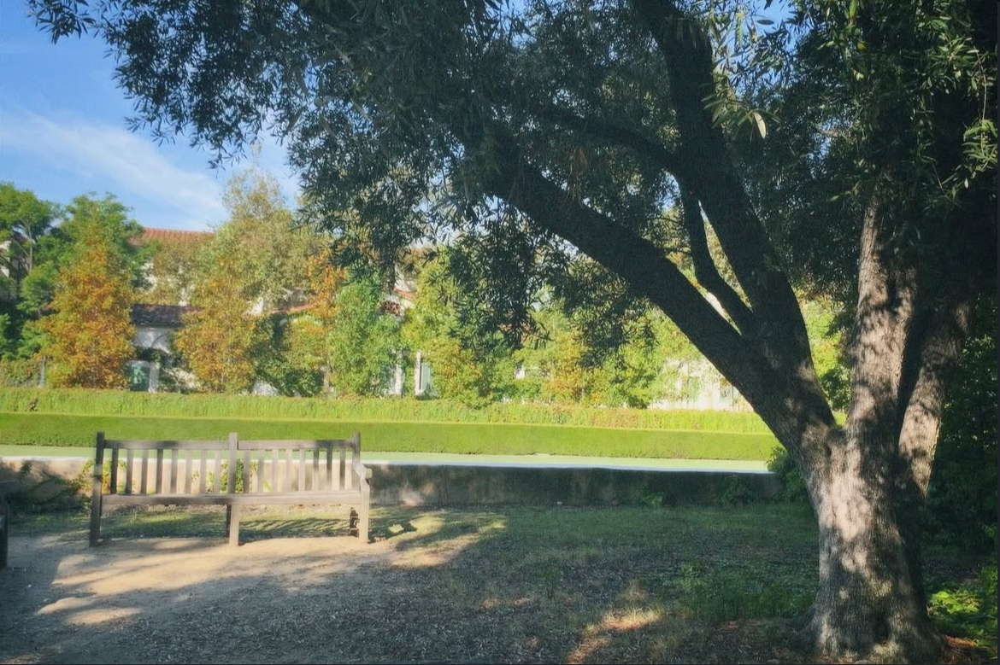

Hi! I'm Alex — a singer-songwriter and full-time student at CMC. I recently released an EP, Dried Rose Petals.
 

This is the first time I've released music that I wrote, sang, and played on guitar :) It was a very cool learning experience!
My EP, Dinner with a Ghost, explores grief, love, and healing. Each song tells a story inspired by real experiences and emotions.
If you're interested in checking it out, 🎧 Here's the link to listen!!